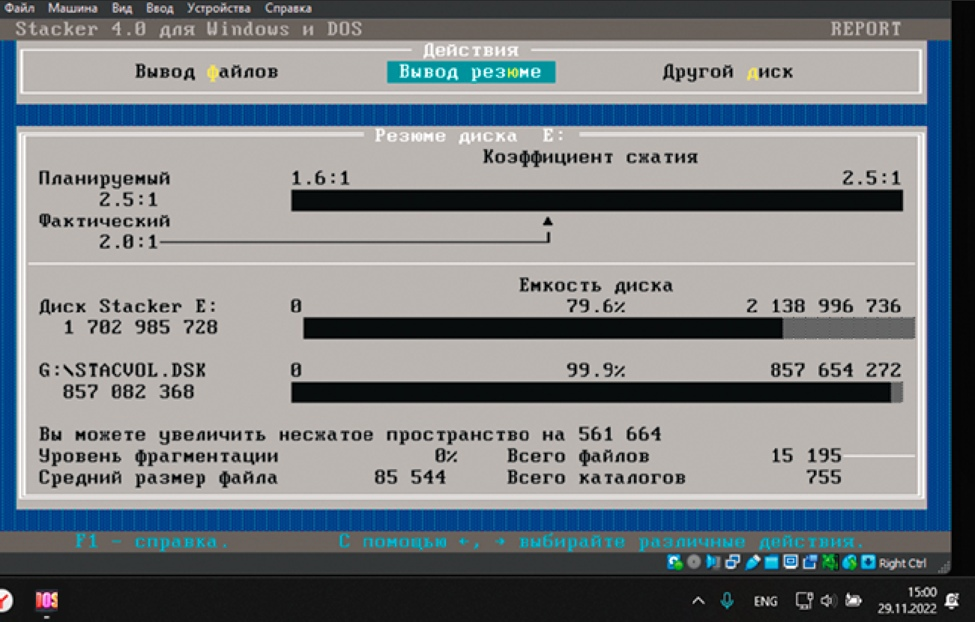

Stacker 4.0
Технология LZS использует для наиболее эффективного хранения данных метод StackerSmartPack. Обычно программы сжатия применяют так называемый метод кластерного уплотнения, который позволяет выделять неиспользуемое пространство последнего кластера файла другому файлу. Stacker4.0 реализует уплотнение на уровне секторов. Поскольку последний сектор кластера почти всегда не используется, это дает возможность повысить степень сжатия диска, выделив оставшееся в секторе пространство какому-либо иному файлу.
Панель инструментов программы Stacker 4.0 создана для упращения управление дисками. Простое указание и щелчок мышью открывают доступ к новой панели дисковых устройств и дополнительным индикаторам, которые позволяют управлять данными. Световые и звуковые сигналы предупреждают пользователя о возможных опасных операциях модификации.
Средство Stacker Windows Toolbox предоставляет доступ ко всем командам, в том числе командам сжатия, проверки, генерации отчета, оптимизации, настройки, задания пароля, AutoSave и конфигурирования. AutoSave — это средство, с помощью которого записывается в файл информация о конфигурации диска, необходимая для его восстановления (в том числе о загрузочной записи, корневом каталоге и таблице распределения файлов). Создаются также резервные копии важных системных файлов. В окне Toolbox выводятся специальные диаграммы, показывающие коэффициент уплотнения, наличие свободного пространства на диске и степень его фрагментации.
Если другие программы заранее устанавливают режим уплотнения данных, то Stacker 4.0 работает более гибко, настраивая алгоритм сжатия данных таким образом, чтобы обеспечить максимальный объем свободного пространства на диске. Десять настраиваемых параметров позволяют найти оптимальный компромисс между экономией дискового пространства и использованием оперативной памяти компьютера. Если работать с DOS 6, то Stacker нуждается всего в 17 Кбайт ОЗУ (DoubleSpace требует вдвое больше). Драйвер Stacker 4.0 размещается в защищенной области, к которой не могут обращаться другие программы среды DOS, что обеспечивает дополнительную надежность. Кроме того, продукт содержит утилиты AutoProtect (для автоматического устранения ошибок на диске) и StackerOptimiser (для дефрагментации диска с целью повышения его производительности).
